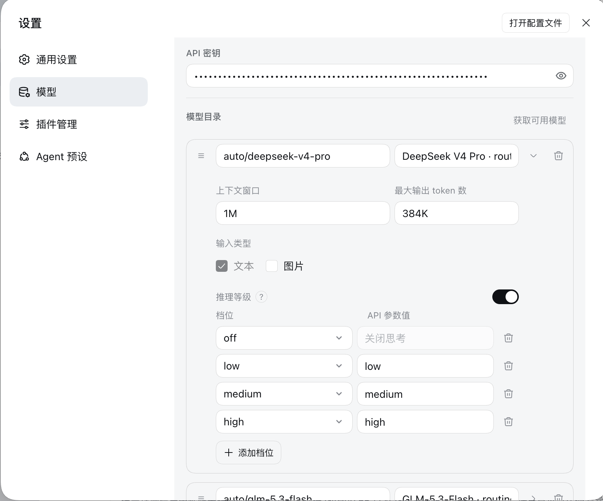

0.2.3-ALPHA.1 · 设置
09 / 11
插件源与模型设置
用 Git 仓库作插件源
在「插件 → 发现 → 管理索引源」添加仓库。有访问权限时，也能浏览和安装私有仓库里的插件。
自定义推理档位
在「设置 → 模型」里编辑内置目录模型的档位和 API 参数值。关闭自定义后，沿用目录默认档位。

0.2.3-ALPHA.1 · 设置
09 / 11
在「插件 → 发现 → 管理索引源」添加仓库。有访问权限时，也能浏览和安装私有仓库里的插件。
在「设置 → 模型」里编辑内置目录模型的档位和 API 参数值。关闭自定义后，沿用目录默认档位。
